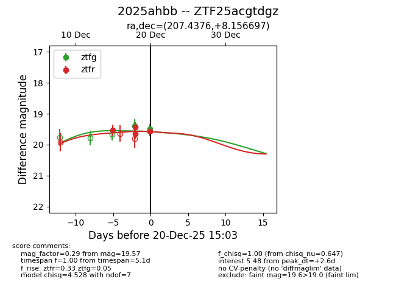
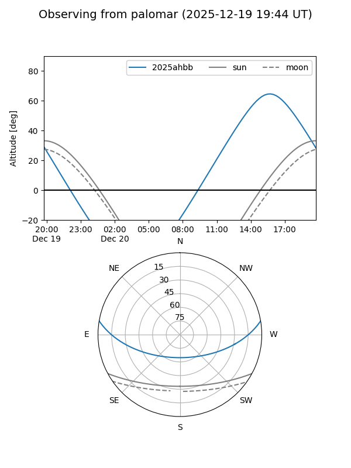
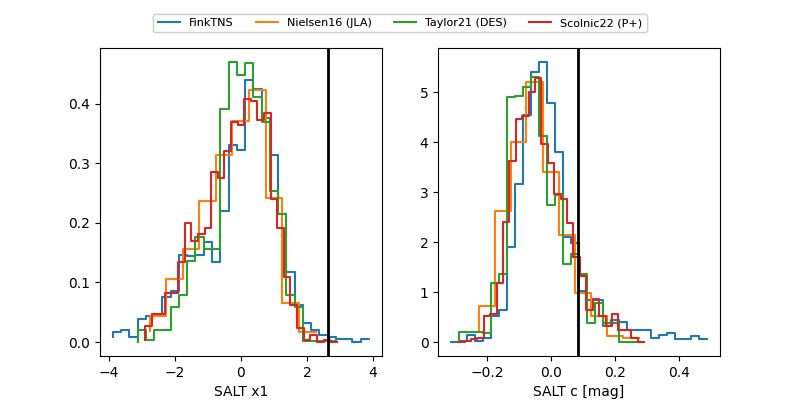

2025ahbb
Target 2025ahbb at 2025-12-29 13:43
Aliases and brokers:
FINK: fink-portal.org/ZTF25acgtdgz
Lasair: lasair-ztf.lsst.ac.uk/objects/ZTF25acgtdgz
ALeRCE: alerce.online/object/ZTF25acgtdgz
TNS: wis-tns.org/object/2025ahbb
YSE: ziggy.ucolick.org/yse/transient_detail/2025ahbb
alt names
ZTF25acgtdgz (ztf,fink_ztf)
2025ahbb (tns,yse)
Coordinates:
equatorial (ra, dec) = 207.4376,+8.15670
equatorial (HMS+DMS) = 13:49:45.03,+08:09:24.11
galactic (l, b) = (341.6704,+66.53694)
Flags:
Photometry:
last ztfg=19.29, ztfr=19.64
5 ztfg, 7 ztfr detections
Lightcurve

Visibility


Additional plots
